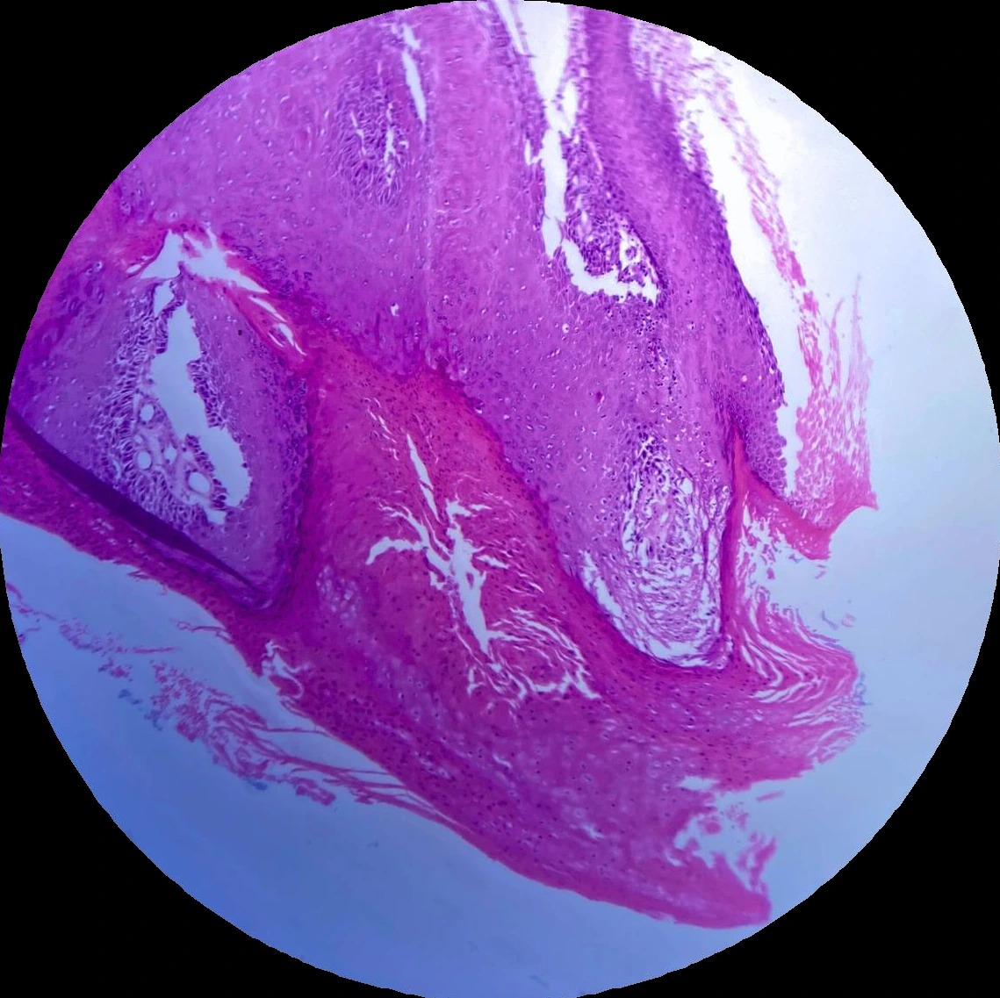

Lámina 01 · IMAGEN 1/4PATOLOGÍA 01 / 07

1 / 4
PATOLOGÍA 01 · Lámina 01
Órgano
Lengua
Proceso
Neoplasia maligna
Descripción
- proliferación neoplásica maligna
- hiperqueratosis
- nidos de células neoplásicas con atipia
- pocas perlas de queratina
- papilas filiformes y acantosis
Diagnóstico
Carcinoma epidermoide de lengua